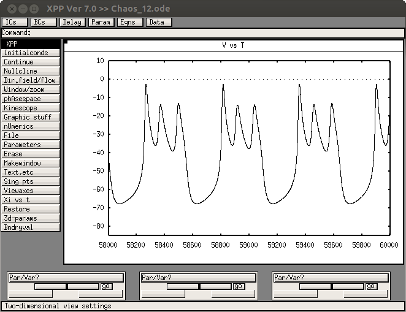
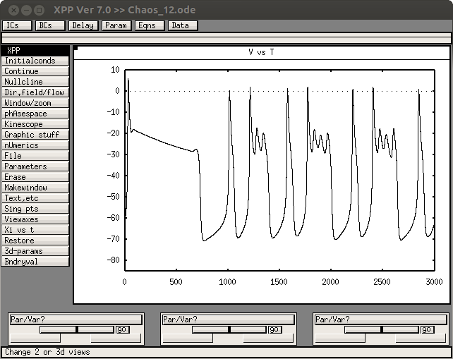
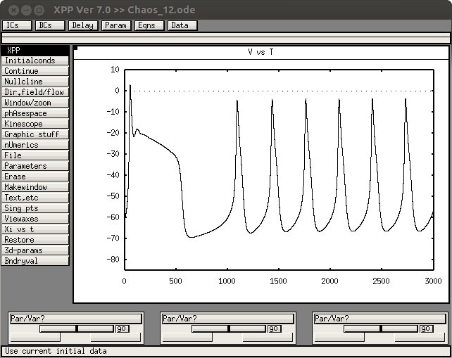

The XPP code associated with the paper: Teka W, Tabak J, Bertram R (2012) The relationship between two fast-slow analysis techniques for bursting oscillations. Chaos 22:043117 is available at this website: http://www.math.fsu.edu/~bertram/software/pituitary/ and specifically this link: http://www.math.fsu.edu/~bertram/software/pituitary/Chaos_12.ode These web pages were accessed last June 6th, 2014. Note from the ModelDB administrator: to run with XPP version 7.0 I found I needed to change bell=off to bell=0 on one of the last few lines. The model when run with a parameter on line 18 changed to Cm=10 produces a graph like the paper Figure 1A:  Note that it needs 55 seconds of simulation to settle down: e.g. it starts like this:  Adjusting the kc=0.1 on line 17 generates a figure similar to Fig 1C: 